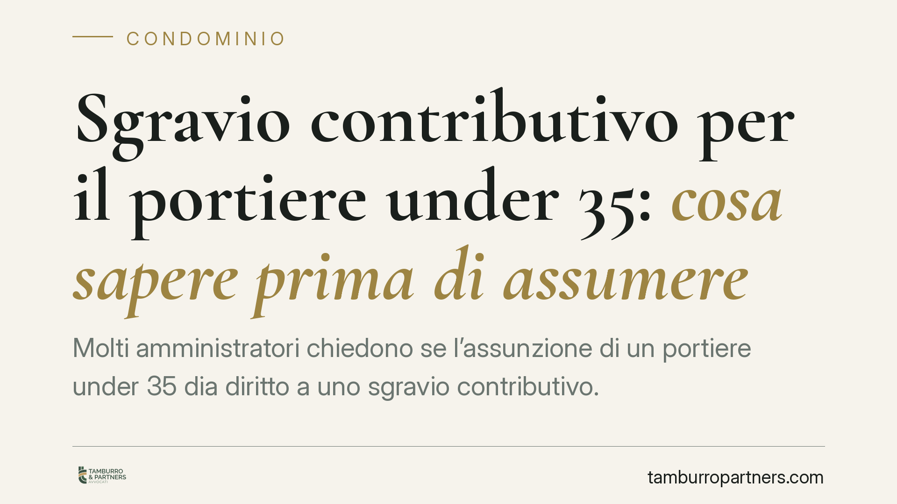

Sgravio contributivo per il portiere under 35: cosa sapere prima di assumere
Molti amministratori chiedono se l'assunzione di un portiere under 35 dia diritto a uno sgravio contributivo. La risposta dipende da requisiti precisi e, soprattutto, da un quadro normativo che va verificato alla data di pubblicazione. Prima di deliberare in assemblea, conviene distinguere ciò che è certo da ciò che resta da confermare, per non promettere risparmi non spettanti.

Il contesto
Il tema è ricorrente: il condominio è, a tutti gli effetti, datore di lavoro quando assume un portiere. Da qui l'interesse per gli incentivi che riducono il costo del lavoro, in particolare per l'assunzione di giovani lavoratori.
Secondo le fonti in circolazione, il beneficio sarebbe collegato a un intervento normativo recente (indicato come d.l. n. 62/2026, conv. l. n. 112/2026) e a una circolare INPS attuativa (n. 55/2026). Attenzione: questi riferimenti non risultano al momento verificabili e vanno considerati da confermare alla data di pubblicazione. Non li presentiamo come diritto vigente e consolidato.
Proprio per questa ragione evitiamo di indicare misura percentuale, durata e importo massimo dello sgravio: tali parametri, se esistenti, sarebbero definiti dalla fonte primaria e dalla circolare INPS di riferimento, che vanno lette nel testo effettivo. Riportare cifre non verificate esporrebbe il lettore a valutazioni economiche errate.
Inquadramento: come funzionano gli sgravi per assunzioni giovanili
A prescindere dallo specifico provvedimento citato, gli sgravi contributivi per l'assunzione di under 35 seguono in Italia uno schema ormai collaudato (si pensi agli incentivi introdotti da diverse Leggi di Bilancio e dai decreti in materia di coesione e occupazione).
Gli elementi tipici sono tre:
- Requisito del lavoratore: età anagrafica entro una soglia (spesso i 35 anni non compiuti) e, di regola, assenza di precedenti rapporti a tempo indeterminato.
- Requisito del datore di lavoro: regolarità contributiva (DURC), rispetto della normativa su salute e sicurezza e dei contratti collettivi applicabili.
- Forma contrattuale: normalmente l'incentivo è riservato all'assunzione a tempo indeterminato.
Per il portiere di condominio si applica il relativo CCNL di categoria. Il condominio deve quindi verificare inquadramento, retribuzione e alloggio di servizio, oltre agli obblighi assicurativi.
Il requisito anagrafico: conta la decorrenza del rapporto
Un punto spesso frainteso: la soglia di età va di norma verificata alla data di decorrenza del rapporto di lavoro, non alla data della delibera assembleare o della firma del contratto. Se il portiere compie 35 anni tra la delibera e l'effettivo avvio del rapporto, il beneficio può venire meno. È un dettaglio che incide sulla pianificazione dei tempi.
L'incremento occupazionale netto
Molti sgravi richiedono che l'assunzione determini un incremento occupazionale netto: il numero dei dipendenti deve aumentare rispetto a un periodo di riferimento.
Il calcolo, nell'impianto abituale di questi incentivi, si basa sul confronto tra il numero di dipendenti nel mese dell'assunzione e la media dei lavoratori occupati nei dodici mesi precedenti, espressa in unità di lavoro annue (ULA), cioè in termini proporzionali all'orario e alla durata del rapporto. Le modalità esatte del confronto vanno però lette nella circolare INPS applicabile: le indichiamo qui come punto da verificare nel testo effettivo del provvedimento.
Esempio concreto: se il portiere precedente è cessato e il condominio ne assume uno nuovo per coprire lo stesso posto, non c'è alcun incremento occupazionale netto. In molti schemi di incentivo, in questi casi il beneficio non spetta, salvo deroghe espresse per le cessazioni non imputabili al datore (dimissioni volontarie, pensionamento, licenziamento per giusta causa). Anche questo va confermato sulla base della disciplina specifica.
Il duplice profilo di responsabilità
Nell'assunzione di un portiere si intrecciano due posizioni. Il condominio è il datore di lavoro sostanziale, titolare degli obblighi retributivi e contributivi. L'amministratore agisce come rappresentante e risponde della corretta gestione degli adempimenti. Errori nell'accesso all'incentivo (ad esempio, fruizione di uno sgravio non spettante) possono generare recuperi contributivi con sanzioni, con evidenti riflessi sui conti condominiali.
Cosa fare in concreto
- Verificate la fonte aggiornata prima di deliberare: chiedete conferma dell'effettiva esistenza e vigenza del provvedimento e della circolare INPS citati.
- Non inserite cifre di risparmio in delibera finché misura e durata non risultano da testo ufficiale.
- Controllate l'età del lavoratore alla data di decorrenza del rapporto, non della firma.
- Affidate al consulente del lavoro il calcolo dell'incremento occupazionale netto e la verifica dei requisiti (DURC, CCNL, forma contrattuale).
- Documentate ogni passaggio: la responsabilità contributiva ricade sul condominio e, per la gestione, sull'amministratore.
Conclusione
L'incentivo, se e nella misura in cui sarà confermato, può ridurre il costo dell'assunzione di un portiere under 35. Ma la prudenza impone di distinguere tra quadro consolidato e riferimenti ancora da verificare, evitando promesse di risparmio che potrebbero non trovare riscontro.
---
Contributo informativo a cura di Tamburro & Partners - Avv. Giuseppe Tamburro. Non costituisce parere legale.
Ogni condominio ha una storia a sé.
Se gestisci un'amministrazione e vuoi un confronto su una specifica questione condominiale, scrivi allo studio. Ti rispondiamo entro un giorno lavorativo.